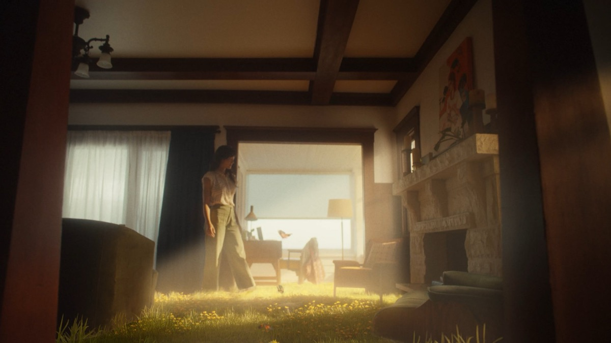

Evan Bourque
[ HOVER TO VIEW ]
SHOTS AWARDS 2025
NEW DIRECTOR OF THE YEAR SHORTLIST
TELLY AWARDS 2025
EAT PECANS – SURPRISINGLY SNACKABLE
SILVER WINNER GENERAL – FOOD & BEVERAGE
“He makes videos for commercials and stuff.” – Evan’s mom. She’s not wrong. Evan Bourque is a director who fuses his preternatural skills in performance, dialogue and quirky characters to deliver masterful and unexpected comedic spots. With an emphasis on nuance, Evan mines the humor that lies within offbeat moments of humanity. Hailing from Canada, he draws on his background in cinematography to infuse his films with cinematic visual flair.
FEATURED WORK
[ HOVER TO VIEW REELS ]
[ CLICK TO VIEW FULL WORK ]

PURA
Director name
VIDEO PRODUCTION / CASTING / EDITORIAL / VFX / SOUND DESIGN & MIX / ORIGINAL MUSIC / COLOR / MOTION GRAPHICS
Brand
Project
Director
Category
PRICELINE
New Negotiator
Evan Bourque
LIVE ACTION
TURO
Open the Door to Extraordinary
Miles & AJ
CREATIVE STUDIO
PURA
Hands On
Nolan Goff
CREATIVE STUDIO
HERA
Age Your Way
Savannah O’Leary
CREATIVE STUDIO
DUNKIN’
Dunk N’ Pump
Luke Orlando
LIVE ACTION
EAT PECANS
Surprisingly Snackable
Evan Bourque
LIVE ACTION
PALMS CASINO
This Is That Vegas
Nolan Goff
LIVE ACTION
PACIFICO
Find Your Own Way
Nolan Goff
LIVE ACTION
CREDIT KARMA
Card Optimizer
Miles & AJ
LIVE ACTION
SQUARESPACE
Courses
Miles & AJ
LIVE ACTION
SNICKERS
Can’t Chill
Tom Morris
LIVE ACTION
PIZZA HUT
The New Yorker
Tom Morris
LIVE ACTION
EA SPORTS
Madden 24 Trailer
Gianluigi Carella
LIVE ACTION
STARBUCKS
Hug
Julia Pitch
LIVE ACTION
PAYPAL
Noise Cancel
Plummer/Strauss
LIVE ACTION
DOJA CAT
Need to Know
Miles & AJ
MUSIC VIDEO
SELENA GOMEZ
In the Dark
Luke Orlando
MUSIC VIDEO
ANYMA & LISA
Bad Angel
Gianluigi Carella
MUSIC VIDEO
NIKE
Concrete Boys
SixTwentySix
EXPERIENTIAL
HEINEKEN
Fan Volunteers
SixTwentySix
EXPERIENTIAL